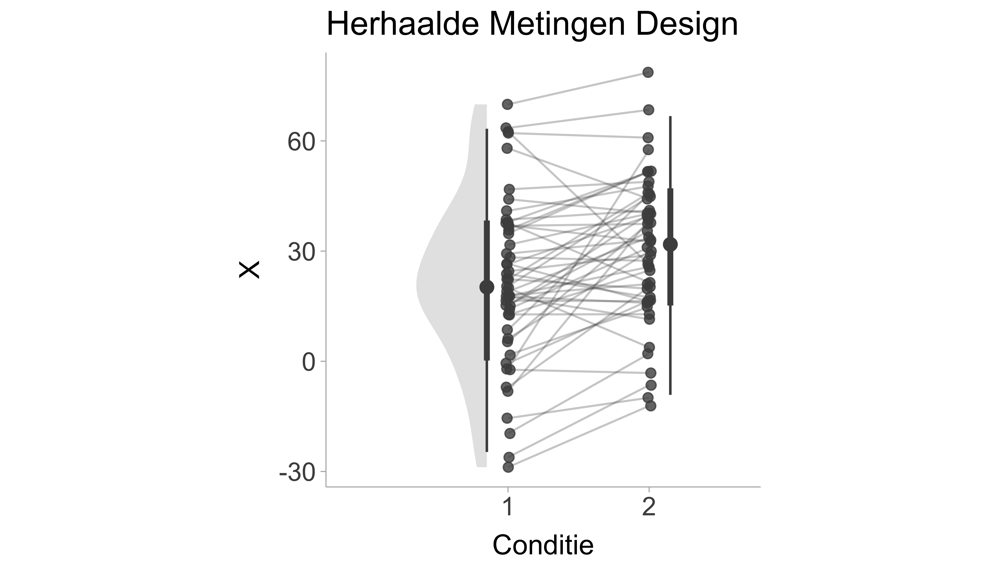
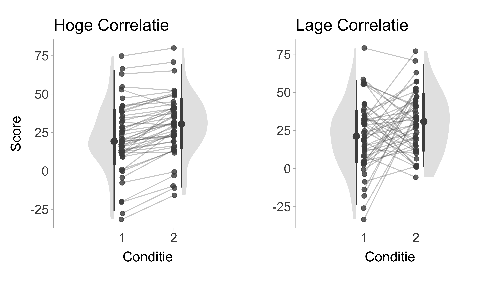
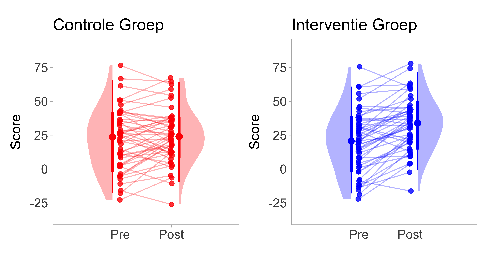

samenwerken, betrouwbaarheidsinterval, effect size, open onderwijsbron, open studiebeurs, open wetenschap
T-tests zijn de meest gebruikte statistische tests voor het onderzoeken van verschillen tussen groepsgemiddelden of het onderzoeken van een groepsgemiddelde ten opzichte van een constante. Het berekenen van effect sizes voor t-tests is vrij eenvoudig. Er zijn echter gevallen waarin cruciale cijfers voor de berekening ontbreken (wat vaak voorkomt in oudere artikelen). Daarom documenteren we methoden die gebruikmaken van gedeeltelijke informatie (bijvoorbeeld alleen de M en de SD, of alleen de t-statistiek en df) voor de berekening. Er zijn meerdere soorten effectgroottes die worden gebruikt om gestandaardiseerde gemiddelde verschillen (d.w.z. Cohen’s \(d\)) te berekenen, maar onderzoekers identificeren heel vaak niet welk type \(d\) waarde ze rapporteren (zie Lakens 2013). Hier documenteren we de vergelijkingen en code die nodig zijn voor het berekenen van elk type \(d\) -waarde uit meerdere bronnen (Becker 1988; Cohen 1988; Lakens 2013; Caldwell 2022; Glass, McGaw, and Smith 1981). Een \(d\) waarde berekend op basis van een steekproef bevat ook steekproeffouten, daarom tonen we ook de vergelijkingen om de standaardfout te berekenen. Met de standaard kunnen we dan het betrouwbaarheidsinterval berekenen. Voor elke formulering in de onderstaande paragrafen kan het betrouwbaarheidsinterval op dezelfde manier worden berekend, dat wil zeggen,
\[
CI_d = d \pm 1.96\times SE
\]
Tot slot leveren we voorbeeld R-code zodat je deze kunt toepassen op je eigen gegevens.
Hier is een tabel voor elke effectgrootte die in dit hoofdstuk is besproken:
Gebruik gemiddelde tussen-groep standaard deviatie om het gemiddelde standaard verschil te standaardiseren. Kan direct worden berekend van een onafhankelijke sample t-test. Gaat uit van homogeniteit van variantie tussen groepen.
Gebruikt de standaard deviatie van de controle groep om het gemiddelde standaard verschil te standaardiseren (vaak aangeduid met Glass’s Delta). Veronderstelt geen homogeniteit van variantie tussen behandel/interventie en controle groep.
Gebruikt de standaard deviatie van verschilscores (ook bekend als veranderingsscores) om de tussenpersoon gemiddelde scoreverschil te standaardiseren (b.v., pre/post-verandering).
Gebruikt de standaarddeviatie binnen een persoon die een correctie op \(d_z\) toepast om de invloed van de pre/post-correlatie op de effectgrootte te verminderen. Gaat uit van homogeniteit van variantie tussen condities.
Gebruikt de gepoolde variantie tussen condities (pre/post test). Maakt geen gebruik van de correlatie tussen condities. Gaat uit van homogeniteit van variantie tussen condities.
Gebruikt de standaarddeviatie van de pre-test om het verschil tussen het gemiddelde voor en na de test te standaardiseren. Gaat niet uit van homogeniteit van variantie tussen pre- en posttest.
\(d_{PPC1}\) - Afzonderlijke standaarddeviaties van de pre-test
Gedefinieerd als het verschil tussen de Becker’s d tussen de behandel- en controlegroep. Met name het standaardiseren van de gemiddelde verandering voor/na door de pre-test van de betreffende groep.
Standaardiseert het verschil in gemiddelde veranderingen tussen de behandel- en controlegroep. Gaat uit van homogeniteit van variantie tussen de pre-test van de controle- en behandelingsconditie.
\(d_{PPC3}\) - Standaarddeviatie gepoolde pre-test en post-test
Poolt de standaardafwijking tussen pre-test en post-test in behandeling en controleconditie. Gaat uit van homogeniteit van variantie tussen pre-/posttestscores en behandel- en controleconditie. Betrouwbaarheidsintervallen zijn niet eenvoudig te berekenen.
\(lnRR_\text{ind}\) - Responsratio tussen onafhankelijke groepen
De verhouding tussen de gemiddelden van twee groepen. Gebruikt de standaarddeviatie niet in de formule voor de effectgrootte.
Responsratio tussen afhankelijke groepen
7.1 Een t-test met effectgrootte en CI rapporteren
Welke effectgrootte en CI je ook wilt rapporteren, je kunt deze rapporteren naast de t-teststatistieken (d.w.z. de t-waarde en de p-waarde). Bijvoorbeeld,
De behandelgroep had een significant hoger gemiddelde dan de controlegroep (t = 2,76, p = .009, n = 35, d = 0,47 [0,11, 0,81]).
7.2 Enkelvoudig Groep Designs
Voor een ontwerp met één groep hebben we één groep en willen we het gemiddelde van die groep vergelijken met een constante, \(C\) (d.w.z. een doelwaarde). Het gestandaardiseerde gemiddelde verschil voor een enkele groep kan worden berekend met (vergelijking 2.3.3, Cohen 1988),
\[
d_s = \frac{M-C}{S_1}
\]
Een positieve \(d_s\) waarde geeft aan dat het gemiddelde groter is dan de doelwaarde, \(C\). Deze formulering gaat ervan uit dat de steekproef getrokken wordt uit een normale verdeling. De standaardisator (d.w.z. de noemer) is de standaardafwijking van de steekproef. De bijbehorende standaardafwijking voor \(d_s\) is (zie documentatie voor Caldwell 2022),
In R kunnen we de functie d.single.t uit het pakket MOTE gebruiken om het gestandaardiseerde gemiddelde verschil voor één groep te berekenen.
# Installeer pakketten als ze al niet geínstalleerd zijn# install.packages('MOTE')# Cohen's d voor één gropp# Bijvoorbeeld:# Sample Gemiddelde = 30.4, SD = 22.53, N = 96# Doelwaarde, C = 15library(MOTE)stats <-d.single.t(m =30.4,u =15,sd =22.53,n =96)# druk alleen de d waarde en betrouwbaarheidsintervallen af data.frame(d =apa(stats$d), dlow =apa(stats$dlow), dhigh =apa(stats$dhigh))
d dlow dhigh
1 0.684 0.460 0.904
Zoals je kunt zien, laat de uitvoer zien dat de effectgrootte \(d_s\) = 0,68, 95% CI [0,46, 0,90]. Merk op dat de apa functie in MOTE een waarde aanneemt en een APA geformatteerde effectgrootte waarde teruggeeft (d.w.z., voorloopnul en drie decimalen).
7.3 Twee Onafhankelijke Groepen Design
7.3.1 Gestanstaardiseerd met Gepoolde Standaard Deviatie (\(d_p\))
Voor een tweegroepsdesign (d.w.z. between-groups design) willen we de gemiddelden van twee groepen (groep 1 en groep 2) vergelijken. Het gestandaardiseerde gemiddelde verschil tussen twee groepen kan worden berekend met (vergelijking 5.1, Glass, McGaw, and Smith 1981),
\[
d_p = \frac{M_1-M_2}{S_p}.
\]
Een positieve \(d_p\) waarde zou aangeven dat het gemiddelde van groep 1 groter is dan het gemiddelde van groep 2. Het gemiddelde verschil delen door de gepoolde standaardafwijking, \(S_p\), is de klassieke formulering van Cohen’s \(d\). De gepoolde standaardafwijking, \(S_p\), kan worden berekend als de vierkantswortel van de gemiddelde variantie (gewogen door de vrijheidsgraden, \(df=n-1\)) van groep 1 en groep 2 (pp. 108, Glass, McGaw, and Smith 1981):
Merk op dat de term variantie verwijst naar het kwadraat van de standaardafwijking (\(S^2\)). Cohen’s \(d_p\) is gerelateerd aan de t-statistiek van een onafhankelijke t-test. In feite kunnen we de \(d_p\) waarde uit de \(t\)-statistiek berekenen met de volgende formule (vergelijking 5.3, Glass, McGaw, and Smith 1981):
In R kunnen we de d.ind.t functie uit het MOTE pakket gebruiken om het gestandaardiseerde gemiddelde verschil tussen twee groepen te berekenen. Omdat we het MOTE pakket al hebben geladen, hoeven we dat niet nog een keer te doen.
# Cohen's d voor twee onafhankelijke groepen# gegeven gemiddelden en SDs# Bijvoorbeeld:# Groep 1 Gemiddelde = 30.4, SD = 22.53, N = 96# Groep 2 Gemiddelde = 21.4, SD = 19.59, N = 96stats <-d.ind.t(m1 =30.4,m2 =21.4,sd1 =22.53,sd2 =19.59,n1 =96,n2 =96,a =0.05)# druk alleen de d waarde en betrouwbaarheidsintervallen af data.frame(d =apa(stats$d), dlow =apa(stats$dlow), dhigh =apa(stats$dhigh))
d dlow dhigh
1 0.426 0.140 0.712
De output laat de resultaten zien: \(d_p\) = 0.43, 95% CI [0.14, 0.71].
7.3.2 Gestandaardiseerd door Controle Groep Standaard Deviatie (\(d_{\Delta}\))
Als twee groepen aanzienlijk verschillen in hun standaarddeviaties, kunnen we in plaats daarvan standaardiseren met de standaarddeviatie van de controlegroep (\(S_C\)), zodat,
\[
d_{\Delta} = \frac{M_T-M_C}{S_C}.
\]
Waarbij de subscripts, \(T\) en \(C\), respectievelijk de behandelgroep en controlegroep aanduiden. Deze formulering wordt gewoonlijk Glass’ \(Delta\) genoemd (Glass 1981). De standaardfout voor \(d_{\Delta}\) kan worden gedefinieerd als,
Merk op dat als we alleen standaardiseren door de standaardafwijking van de controlegroep (in plaats van poolen), we minder vrijheidsgraden hebben (\(df=n_C-1\)) en dus meer steekproeffout dan wanneer we delen door de gepoolde standaardafwijking (\(df= n_T + n_C - 2\)). In R kunnen we de functie delta.ind.t.diff uit het pakket MOTE gebruiken om \(d_Delta\) te berekenen.
# Cohen's dz voor verschilscores# gegeven verschilscore gemiddelden en SDs# Bijvoorbeeld# Controle groep Gemiddelde = 30.4, SD = 22.53, N = 96# Behandel groep Gemiddelde = 21.4, SD = 19.59, N = 96# correlatie tussen condities: r = .40stats <-delta.ind.t(m1 =30.4,m2 =21.4,sd1 =22.53,sd2 =19.59,n1 =96,n2 =96,a =0.05)# druk alleen de d waarde en betrouwbaarheidsintervallen afdata.frame(d =apa(stats$d), dlow =apa(stats$dlow), dhigh =apa(stats$dhigh))
d dlow dhigh
1 0.399 0.140 0.712
7.4 Herhaalde Metingen Designs
In een ontwerp met herhaalde metingen worden dezelfde proefpersonen (of items, enz.) gemeten op twee of meer afzonderlijke gelegenheden of in meerdere omstandigheden binnen één sessie. Tegelijk willen het gemiddelde verschil weten tussen die gelegenheden of omstandigheden (Baayen, Davidson, and Bates 2008; Barr et al. 2013). Een voorbeeld hiervan is een pre/post-vergelijking waarbij proefpersonen worden getest voor en na het ondergaan van een bepaalde behandeling (zie Figure 7.1 voor een visualisatie). Een gestandaardiseerd gemiddeld verschil in een ontwerp met herhaalde metingen kan een paar verschillende vormen aannemen die we hieronder definiëren.

Figure 7.1: Figuur met gesimuleerde data van een herhaalde metingen ontwerp, de x-as toont de conditie (bijv. pre-test en post-test) en de y-as zijn de scores. Lijnen geven de verandering binnen de persoon voor/na aan.
7.4.1 Verschilscore \(d\) (\(d_z\))
In plaats van de gemiddelden van twee sets scores met elkaar te vergelijken, kunnen we bij een within subject design de scores verkregen in conditie 1 aftrekken van de scores in conditie 2. Deze verschilscores (\(X_{{diff}}=X_2-X_1\)) kunnen op dezelfde manier worden gebruikt als bij het single group design (als de doelwaarde nul was, d.w.z. \(C=0\)), zodat (vergelijking 2.3.5, Cohen 1988),
Het verschil tussen deze formulering en het enkelvoudig groep design is de aard van de scores (verschilscores in plaats van ruwe scores). Het handige van \(d_z\) is dat het een direct verband heeft met de \(t\)-statistiek, \(d_z=\frac{t}{\sqrt{n}}\). Dit maakt het erg nuttig voor poweranalyses. Als de standaardafwijking van de verschilscores niet toegankelijk is, kan deze berekend worden met de standaardafwijking van conditie 1 (\(S_1\)), de standaardafwijking van conditie 2 (\(S_2\)) en de correlatie tussen condities (\(r\)) (vergelijking 2.3.6, Cohen 1988):
\[
S_{\text{diff}}=\sqrt{S^2_1 + S^2_2 - 2 r S_1 S_2}
\]
Het is belangrijk op te merken dat wanneer de correlatie tussen groepen groot is, de \(d_z\) waarde ook groter zal zijn, terwijl een kleine correlatie een kleinere \(d_z\) waarde zal opleveren. De standaardafwijking van \(d_z\) kan op dezelfde manier worden berekend als bij het ontwerp met één groep, zodat,
In R kunnen we de functie d.ind.t.diff uit het pakket MOTE gebruiken om \(d_z\) te berekenen.
# Cohen's dz voor verschilscores# gegeven verschilscore gemiddelden en SDs# Bijvoorbeeld:# Verschilscore Gemiddelde = 21.4, SD = 19.59, N = 96library(MOTE)stats <-d.dep.t.diff(m =21.4,sd =19.59,n =96,a =0.05)# druk alleen de d waarde en betrouwbaarheidsintervallen afdata.frame(d =apa(stats$d), dlow =apa(stats$dlow), dhigh =apa(stats$dhigh))
d dlow dhigh
1 1.092 0.837 1.344
De uitvoer laat zien dat de effectgrootte \(d_z\) = 1,09, 95% CI [0,84, 1,34].
7.4.2 Herhaalde Metingen \(d\) (\(d_{rm}\))
Voor een binnen-groep design willen we de gemiddelden van scores verkregen uit conditie 1 en conditie 2 vergelijken. Het repeated measures gestandaardiseerde gemiddelde verschil tussen de twee condities kan worden berekend met (vergelijking 9, Lakens 2013),
\[
d_{rm} = \frac{M_2-M_1}{S_w}.
\]
Een positieve \(d_{rm}\) waarde zou aangeven dat het gemiddelde van toestand 2 groter is dan het gemiddelde van toestand 1. Het gaat hier om de standaardafwijking binnen het onderwerp, \(S_w\). De standaardafwijking binnen het onderwerp kan als volgt worden gedefinieerd,
\[
S_{w}=\sqrt{\frac{S^2_1 + S^2_2 - 2 r S_1 S_2}{2(1-r)}}.
\]
We kunnen \(S_w\) ook uitdrukken in termen van de standaardafwijking van de verschilscores (\(S_{{diff}}\)),
Verder kunnen we \(d_{rm}\) zelfs uitdrukken in termen van de verschilscore gestandaardiseerd gemiddeld verschil (\(d_z\)),
\[
d_{rm} = d_z \times \sqrt{2(1-r)}.
\]
Uiteindelijk is \(d_{rm}\) meer geschikt als effectgrootteschatting voor gebruik in meta-analyses, terwijl \(d_z\) meer geschikt is voor poweranalyse (Lakens 2013). De standaardfout voor \(d_{rm}\) kan als volgt worden berekend,
In R kunnen we de d.ind.t.rm functie uit het MOTE pakket gebruiken om het repeated measures standardized mean difference (\(d_{rm}\)) te berekenen.
# Cohen's d voor herhaalde metingen# gegeven gemiddelden en SDs en correlatie# Bijvoorbeeld:# Conditie 1 Gemiddelde = 30.4, SD = 22.53, N = 96# Conditie 2 Gemiddelde = 21.4, SD = 19.59, N = 96# correlatie tussen condities: r = .40stats <-d.dep.t.rm(m1 =30.4,m2 =21.4,sd1 =22.53,sd2 =19.59,r = .40,n =96,a =0.05)# druk alleen de d waarde en betrouwbaarheidsintervallen afdata.frame(d =apa(stats$d), dlow =apa(stats$dlow), dhigh =apa(stats$dhigh))
d dlow dhigh
1 0.425 0.215 0.633
De uitvoer laat zien dat de effectgrootte \(d_{rm}\) = 0,42, 95% CI [0,21, 0,63] is.
7.4.3 Gemiddelde variantie \(d\) (\(d_{av}\))
Het probleem met \(d_{z}\) en \(d_{rm}\) is dat ze de correlatie tussen condities vereisen. In de praktijk worden correlaties tussen condities vaak niet gerapporteerd. Een alternatieve schatter van Cohen’s \(d\) bij een ontwerp met herhaalde metingen is om gewoon de klassieke variatie van Cohen’s \(d\) te gebruiken (d.w.z. gepoolde standaardafwijking). In een ontwerp met herhaalde metingen verandert de steekproefgrootte niet tussen condities. Daarom is het wegen van de variantie van toestand 1 en toestand 2 met hun respectieve vrijheidsgraden (d.w.z. \(df=n-1\)) een onnodige stap. In plaats daarvan kunnen we standaardiseren met de vierkantswortel van het gemiddelde van de varianties van toestand 1 en 2 (zie vergelijking 5, Algina and Keselman 2003):
Deze formulering is vooral handig als de correlatie niet aanwezig is, maar zonder de correlatie wordt er geen rekening gehouden met de consistentie van verandering tussen condities. De standaardfout van de \(d_{av}\) kan worden uitgedrukt als (vergelijking 9, Algina and Keselman 2003),
In R kunnen we de d.ind.t.rm functie uit het MOTE pakket gebruiken om het herhaalde metingen gestandardiseerde gemiddelde verschil (\(d_{rm}\)) te berekenen.
# Cohen's d voor herhaalde metingen (gemiddelde variantie)# gegeven gemiddelde en SDs # Bijvoorbeeld:# Conditie 1 Gemiddelde = 30.4, SD = 22.53, N = 96# Conditie 2 Gemiddelde = 21.4, SD = 19.59, N = 96stats <-d.dep.t.avg(m1 =30.4,m2 =21.4,sd1 =22.53,sd2 =19.59,n =96,a =0.05)# druk alleen de d waarde en betrouwbaarheidsintervalel afdata.frame(d =apa(stats$d), dlow =apa(stats$dlow), dhigh =apa(stats$dhigh))
d dlow dhigh
1 0.427 0.217 0.635
De uitvoer laat zien dat de effectgrootte \(d_{av}\) = 0,43, 95% CI [0,22, 0,64].
7.4.4 Becker’s \(d\) (\(d_b\))
Een nog eenvoudiger variant van herhaalde metingen \(d\)waarde komt van Becker (1988). Becker’s \(d\) standaardiseert eenvoudigweg met de standaardafwijking vóór de test als de vergelijking een pre-post design is,
De handige interpretatie van “verandering in basislijnstandaarddeviaties” kan heel nuttig zijn. We kunnen de standaardfout ook verkrijgen met (vergelijking 13, Becker 1988),
Merk op dat hoewel de formule voor het berekenen van \(d_b\) niet de correlatiecoëfficiënt bevatte, de standaardfout dat wel doet.
In basis-R kunnen we Becker’s formulering van gestandaardiseerd gemiddelde verschil berekenen met bovenstaande vergelijkingen.
# Installeer het pakket hieronder als je dat al niet gedaan hebt# install.packages(escalc)# Cohen's d voor herhaalde metingen (becker's d)# gegeven gemiddelde, de pre-test SDs en de correlatie# Bijvoorbeeld:# Pre-test Gemiddelde = 21.4, SD = 19.59, N = 96# Post-test Gemiddelde = 30.4, N = 96# Correlatie tussen condities: r = .40Mpre <-21.4Mpost <-30.4Spre <-19.59r <- .40n <-96a <-0.05d <- (Mpost - Mpre) / SpreSE <-sqrt( 2*(1-r)/n + d^2/(2*n) )# druk alleen de d waarde en betrouwbaarheidsintervallen af data.frame(d =apa(d), dlow =apa(d -1.96*SE), dhigh =apa(d +1.96*SE))
d dlow dhigh
1 0.459 0.231 0.688
De uitvoer laat zien dat de effectgrootte \(d_{rm}\) = 0,46, 95% CI [0,23, 0,69].
7.4.5 Vergelijken Herhaalde Metingen \(d\) waarden
Figure 7.2 toont herhaalde metingen ontwerpen met een hoge (\(r=\) .95) en lage (\(r=\) .05) correlatie tussen condities. Laten we de standaarddeviaties en gemiddelden voor beide condities (hoge en lage correlatie) vastzetten en alleen de correlatie variëren. Nu kunnen we de herhaalde-maatregelen-schatters op basis van deze twee condities in Figure 7.2 vergelijken:
Hoge correlatie:
\(d_z=1.24\)
\(d_{rm}=0.39\)
\(d_{av}=0.43\)
\(d_{b}=0.40\)
Lage correlatie:
\(d_z=0.31\)
\(d_{rm}=0.43\)
\(d_{av}=0.43\)
\(d_{b}=0.40\)
We merken op dat de correlatie \(d_z\) sterker beïnvloedt dan elke andere schatter. De waarde van \(d_{rm}\) verandert heel weinig, terwijl \(d_{av}\) en \(d_{b}\) helemaal geen rekening houden met de correlatie.

Figure 7.2: Figuur met gesimuleerde gegevens van een herhaald metingenontwerp, waarbij de x-as de conditie weergeeft (bijv. pre-test en post-test) en de y-as de scores. Het linkerpaneel toont een hoge pre-post correlatie (\(r\) = .95) en het rechterpaneel toont een conditie met een lage correlatie (\(r\) = .05). Lijnen geven de verandering binnen de persoon voor/na aan.
7.5 Pretest-Posttest-Controle Groep Designs
In veel onderzoeksgebieden worden zowel tussen als binnen de groep factoren opgenomen. Bij onderzoek waarbij de effecten van een interventie worden onderzocht, wordt een steekproef bijvoorbeeld vaak gerandomiseerd in twee afzonderlijke groepen (interventie en controle) en wordt de uitkomst van belang zowel voor (pretest) als na (posttest) de interventie/controleperiode gemeten. In dit soort 2x2 (groep x tijd) studieontwerpen is het meestal het verschil tussen de gestandaardiseerde gemiddelde verandering voor de interventie/behandeling (\(T\)) en de controlegroep (\(C\)) dat van belang is. Voor een visualisatie van een pretest-posttest-controlegroepdesign zie Figure 7.3.
Morris (2008) geeft drie effectgroottes voor deze pretest-posttest-controle (PPC).

Figure 7.3: Illustration of a pre-post control design. Left panel shows the pre-post difference in the control group and right panel shows the pre-post difference in the intervention/treatment group. Lines indicate within person pre/post change.
De afzonderlijke standaarddeviaties van de pre-test (d.w.z. baseline) worden gebruikt om het gemiddelde verschil van de interventiegroep en de controlegroep van voor en na te standaardiseren (zie vergelijking 4, Morris 2008),
Merk op dat deze effectgroottes identiek zijn aan de \(d\) formulering van de SMD van Becker (zie Section 7.4.4). Daarom is de pretest-posttest-controlegroep effectgrootte simpelweg het verschil tussen de interventie en controle pre/post SMD (vergelijking 15, Becker 1988),
\[
d_{PPC1} = d_T - d_C
\]
De asymptotische standaardafwijking van \(d_{PPC2}\) werd voor het eerst afgeleid door Becker (1988) en kan worden uitgedrukt als de vierkantswortel van de som van de steekproefvarianties (vergelijking 16, Becker 1988).
De gepoolde standaarddeviaties vóór de test (d.w.z. bij de uitgangswaarde) kunnen worden gebruikt om het verschil in verandering vóór/na de interventie- en controlegroep te standaardiseren, zodat (vergelijking 8, Morris 2008),
Merk op dat de oorspronkelijke vergelijking in het artikel van Morris (2008) de populatie pre-post correlatie \(rho\) gebruikt, maar in bovenstaande vergelijking vervangen we \(rho\) door het steekproefgrootte gewogen gemiddelde van de Pearson correlatie berekend in de behandelgroep en de controlegroep (d.w.z. \(rho approx frac{n_ r_T + n_C r_C}{n_T + n_C}\)).
We kunnen R gebruiken om \(d_{PPC2}\) en betrouwbaarheidsintervallen te verkrijgen:
De output toont een pre-post interventie-effect van \(d_{PPC2}\) = 0,36 [0,30, 0,42].
7.5.3 PPC3 - gepoolde pre- en post-test
De twee vorige effect sizes gebruiken alleen de pretest standaarddeviatie. Maar als we graag aannemen dat pretest- en posttestvarianties homogeen zijn1, kunnen de gepoolde pre-test- en postteststandaarddeviaties worden gebruikt om het verschil in verandering voor en na de interventie- en controlegroep te standaardiseren, zodat (vergelijking 8, Morris 2008),
De standaardfout voor \(d_{PPC2}\) is momenteel onbekend. Een optie om deze standaardfout te schatten is het gebruik van een niet-parametrische of parametrische bootstrap door de ruwe gegevens herhaaldelijk te sampelen, of als de ruwe gegevens niet beschikbaar zijn door gesimuleerde gegevens te sampelen. We kunnen dit doen in basis-R door voor/na data te simuleren met de mvrnorm() functie uit het MASS pakket (Venables and Ripley 2002):
# Installeer het pakket als het nog niet is geïnstalleerd# install.packages(MASS)# Bijvoorbeeld:# Controle Groep (N = 90)## Pre-test Gemiddelde = 20, SD = 6## Post-test Gemiddelde = 25, SD = 7## Pre/post correlatie = .50M_Cpre <-20M_Cpost <-25SD_Cpre <-6SD_Cpost <-7rC <- .50nC <-90# Interventie Groep (N = 90)## Pre-test Gemiddelde = 20, SD = 5## Post-test Gemiddelde = 27, SD = 8## Pre/post correlatie = .50M_Tpre <-20M_Tpost <-27SD_Tpre <-5SD_Tpost <-8rT <- .50nT <-90# simuleerdataset.seed(1) # set seed voor reproduceerbaarheidboot_dPPC3 <-c()for(i in1:1000){# simuleer controle groep pre-post data data_C <- MASS::mvrnorm(n = nC,# input geobserveerde gemiddeldenmu =c(M_Cpre,M_Cpost),# input geobserveerde covariantie matrixSigma =data.frame(pre =c(SD_Cpre^2, rC*SD_Cpre*SD_Cpost), post =c(rC*SD_Cpre*SD_Cpost,SD_Cpost^2)))# simuleer interventie groep pre-post data data_T <- MASS::mvrnorm(n = nT,# input geobserveerde gemiddeldenmu =c(M_Tpre,M_Tpost),# input geobserveerde covariantie matrixSigma =data.frame(pre =c(SD_Tpre^2, rT*SD_Tpre*SD_Tpost), post =c(rT*SD_Tpre*SD_Tpost,SD_Tpost^2)))# bereken het gemiddelde verschil in pre/post verandering (de teller) MeanDiff <- (mean(data_T[,2]) -mean(data_T[,1])) - (mean(data_C[,2]) -mean(data_C[,1]))# bereken de gepoolde pre-post standaard deviatie (de deler) S_Pprepost <-sqrt( ( (nT -1)*(sd(data_T[,1])^2+sd(data_T[,2])^2) + (nC -1)*(sd(data_C[,1])^2+sd(data_C[,2])^2) ) / (nT + nC -2) )# bereken het gestandaardiseerde gemiddelde verschil voor elke bootstrap iteratie boot_dPPC3[i] <- MeanDiff / S_Pprepost}# bereken gebootstrapte standaard foutSE <-sd(boot_dPPC3)# bereken de geobserveerde gestandaardiseerde gemiddelde verschildPPC3 <- ((M_Tpost- M_Tpre) - (M_Cpost - M_Cpre)) /sqrt( ( (nT -1)*(SD_Tpre^2+SD_Tpost^2) + (nC -1)*(SD_Cpre^2+SD_Cpost^2) ) / (nT + nC -2) )#druk de d waarde en betrouwbaarheidsintervallen afdata.frame(d = MOTE::apa(dPPC3),dlow = MOTE::apa(dPPC3 -1.96*SE),dhigh = MOTE::apa(dPPC3 +1.96*SE))
d dlow dhigh
1 0.214 0.002 0.427
De output toont een pre-post interventie-effect van \(d_{PPC3}\) = 0,21 [0,002, 0,43].
7.6 Vertekening van \(d\) waarden in kleine steekproeven
Alle bovenstaande schatters van \(d\) zijn vertekende schattingen van de populatiewaarde \(d\), vooral overschatten ze allemaal de populatiewaarde bij kleine steekproeven. Om voor deze vertekening te corrigeren, kunnen we een correctiefactor toepassen op basis van de vrijheidsgraden. De vrijheidsgraden hangen grotendeels af van de gebruikte schatter. De vrijheidsgraden voor elke schatter staan hieronder vermeld:
Enkelvoudig Groep design (\(d_s\)): \(df = n-1\)
Tussen Groepen - Gepoolde Standaard Deviatie (\(d_p\)): \(df = n_1+n_2-2\)
Tussen Groepen - Controle Groep Standaard Deviatie (\(d_\Delta\)): \(df = n_C-1\)
Pretest-Posttest-Controle Gepooled Pretest en Posttest Standaard Deviatie (\(d_{PPC3}\)): \(df=2(n_T+n_C−2)\)
Met de juiste vrijheidsgraden kunnen we de volgende correctiefactor, \(CF\), gebruiken om een onvertekende schatting van het gestandaardiseerde gemiddelde verschil van de populatie te krijgen:
Waarbij \(Gamma(\cdot)\) de gammafunctie is. Een benadering van deze complexe formule gegeven door Hedges (1981) kan worden geschreven als \(CF\approx 1-\frac{3}{4\cdot df -1}\). In R kan dit worden berekend met,
Deze correctiefactor kan dan worden toegepast op elk van de bovengenoemde schatters,
\[
d^* = d\times CF
\]
De gecorrigeerde \(d\) waarde, \(d^*\), wordt gewoonlijk Hedges’ \(g\) of gewoon \(g\) genoemd. Om verwarring in de notatie te voorkomen voegen we een sterretje toe aan \(d\) om de correctie aan te geven. We moeten ook de standaardfout voor \(d^*\) corrigeren
\[
SE_{d^*} = SE_{d} \times CF
\]
Deze standaardfouten kunnen dan worden gebruikt om het betrouwbaarheidsinterval van de gecorrigeerde \(d\) -waarde te berekenen,
\[
CI_{d*} = d^* \pm 1.96\times SE_{d^*}
\]
# Voorbeeld:# Cohen's d = .50, SE = .10d = .50SE = .10# bereken d waarde en CI's van kleine sample biasd_corrected <- d * CFSE_corrected <- SE * CFdlow_corrected <- d_corrected -1.96*SE_correcteddhigh_corrected <- d_corrected +1.96*SE_corrected# druk alleen de d waarde en betrouwbaarheidsintrvallen afdata.frame(d =apa(d), dlow =apa(dlow_corrected), dhigh =apa(dhigh_corrected))
d dlow dhigh
1 0.500 0.298 0.681
De output laat zien dat de gecorrigeerde effectgrootte \(d^*\) = 0,50, 95% CI [0,30, 0,68].
7.7 Verhoudingen van gemiddelden
Een andere veelgebruikte benadering, met name op het gebied van ecologie en evolutie, is het nemen van de natuurlijke logaritme van de verhouding tussen twee gemiddelden; de zogenaamde responsratio (\(lnRR\)). Dit is soms gunstiger omdat, doordat bij de constructie ervan de standaarddeviatie in een of andere vorm als noemer wordt gebruikt, de verschillende versies van gestandaardiseerde gemiddelde verschillen worden beïnvloed door de schatting van deze parameter waarvoor studies vaak minder sterk zijn in vergelijking met gemiddelde grootheden (Yang et al. 2022). Voor de \(lnRR\) heeft de standaarddeviatie echter alleen invloed op de variantieschatting en niet op de puntschatting. Een beperking van de lnRR is echter dat deze beperkt is tot gegevens die worden waargenomen op een verhoudingsschaal (d.w.z. een absoluut nulpunt hebben en gevallen daarvan ordinaal en additief gerelateerd zijn, wat betekent dat beide gemiddelden positief zijn).
Hoewel de \(lnRR\) strikt genomen geen verschil in gemiddelden in additieve zin is, zoals de bovenstaande gestandaardiseerde effectgroottes voor gemiddelde verschillen, kan het in zekere zin worden beschouwd als een weergave van het verschil in gemiddelden op de multiplicatieve schaal. In feite wordt het na berekening vaak getransformeerd om het procentuele verschil of de verandering tussen de gemiddelden weer te geven: \(100 maal \exp(lnRR)-1\). Dit kan echter een door transformatie geïnduceerde vertekening veroorzaken, omdat een niet-lineaire transformatie van een gemiddelde waarde over het algemeen niet gelijk is aan het gemiddelde van de getransformeerde waarde. In de context van een meta-analyse waarin \(lnRR\) geschat over verschillende studies worden gecombineerd, kan een correcte factor worden toegepast: \(100 maal \exp(lnRR+0,5 S^2_\text{total})-1\), waarbij \(S^2_\text{total}\) de variantie van alle \(lnRR\) -waarden is.
Net als voor de verschillende gestandaardiseerde gemiddelde verschillen, bestaan er verschillende berekeningen voor de lnRR, afhankelijk van de gebruikte studieopzet (zie Senior, Viechtbauer, and Nakagawa 2020).
7.7.1 lnRR voor onafhankelijke groepen (\(lnRR_{ind}\))
De lnRR kan als volgt worden berekend als groepen onafhankelijk zijn,
Waarbij \(M_T\) en \(M_C\) de gemiddelden zijn voor respectievelijk de behandel- en controlegroep en \(CF\) de kleine steekproefcorrectiefactor is, berekend als,
Het voorbeeld geeft een natuurlijke log-responsratio van \(lnRR_text{ind}\) = 0,35 [0,12, 0,59].
7.7.2 lnRR voor afhankelijke groepen (\(lnRR_\text{dep}\))
De lnRR kan als volgt worden berekend als de groepen afhankelijk zijn (d.w.z. dezelfde proefpersonen in beide condities), bijvoorbeeld een pre-post vergelijking,
Het voorbeeld geeft een natuurlijke logreactieverhouding van \(lnRR_text{dep}\) = 0,35 [0,17, 0,54].
Algina, James, and H. J. Keselman. 2003. “Approximate Confidence Intervals for Effect Sizes.”Educational and Psychological Measurement 63 (4): 537–53. https://doi.org/10.1177/0013164403256358.
Baayen, R Harald, Douglas J Davidson, and Douglas M Bates. 2008. “Mixed-Effects Modeling with Crossed Random Effects for Subjects and Items.”Journal of Memory and Language 59 (4): 390–412.
Barr, Dale J, Roger Levy, Christoph Scheepers, and Harry J Tily. 2013. “Random Effects Structure for Confirmatory Hypothesis Testing: Keep It Maximal.”Journal of Memory and Language 68 (3): 255–78.
Becker, Betsy J. 1988. “Synthesizing Standardized Mean-Change Measures - UConn Library.”British Journal of Mathematical and Statistical Psychology 41 (2): 257278. https://doi.org/https://doi.org/10.1111/j.2044-8317.1988.tb00901.x.
Hedges, Larry V. 1981. “Distribution Theory for Glass’s Estimator of Effect Size and Related Estimators.”Journal of Educational Statistics 6 (2): 107–28. https://doi.org/10.3102/10769986006002107.
Morris, Scott B. 2008. “Estimating Effect Sizes From Pretest-Posttest-Control Group Designs.”Organizational Research Methods 11 (2): 364–86. https://doi.org/10.1177/1094428106291059.
Senior, Alistair M., Wolfgang Viechtbauer, and Shinichi Nakagawa. 2020. “Revisiting and Expanding the Meta-Analysis of Variation: The Log Coefficient of Variation Ratio.”Research Synthesis Methods 11 (4): 553–67. https://doi.org/10.1002/jrsm.1423.
Viechtbauer, Wolfgang. 2010. “Conducting Meta-Analyses in R with the metafor Package.”Journal of Statistical Software 36 (3): 1–48. https://doi.org/10.18637/jss.v036.i03.
Yang, Yefeng, Helmut Hillebrand, Malgorzata Lagisz, Ian Cleasby, and Shinichi Nakagawa. 2022. “Low Statistical Power and Overestimated Anthropogenic Impacts, Exacerbated by Publication Bias, Dominate Field Studies in Global Change Biology.”Global Change Biology 28 (3): 969–89. https://doi.org/10.1111/gcb.15972.
Let op, dit is mogelijk niet het geval, vooral als er een gemiddelde-variantie relatie is en één (meestal de interventie) groep een hogere posttest gemiddelde score heeft.↩︎